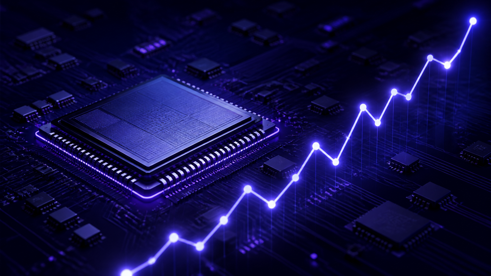

⬟ 예측 근거 검증됨
HBM4 경쟁 구도와 국내 수혜주
HBM4 양산 일정과 주요 공급망 변화를 바탕으로 핵심 수혜 기업을 분석합니다.

◉ 3.2K▣ 18
검증된 예측가들의 시장 인사이트를 만나보세요.
HBM4 양산 일정과 주요 공급망 변화를 바탕으로 핵심 수혜 기업을 분석합니다.

양산 일정과 후공정 장비 수주 흐름을 단계별로 나눠 수혜 구간을 정리했습니다.
수출주와 내수주의 환율 민감도를 과거 구간과 비교해 정리했습니다.
셀·소재 업체의 재고 회전 지표를 모아 사이클 위치를 가늠해봤습니다. 작성 중인 초안입니다.
메모리 가격 반등의 구조적 요인과 업사이클 지속 가능성을 점검합니다.
금리 사이클 전환 구간에서 수혜가 기대되는 성장주 섹터와 종목을 제시합니다.
데이터센터 전력 수요 급증과 전력 인프라 기업의 중장기 성장성을 분석합니다.
2차전지 주요 기업들의 실적 바닥 신호와 회복 시점을 정리했습니다.
플랫폼 기술 경쟁력과 파이프라인 가치를 기준으로 투자 포인트를 정리합니다.
외국인 수급 패턴과 업종별 순매수 전환 신호를 데이터로 분석했습니다.
모바일과 엣지 디바이스의 AI 확산에 따른 핵심 밸류체인을 살펴봅니다.
자본비율과 주주환원 정책을 중심으로 은행주의 배당 여력을 비교합니다.
주요 제조사의 재고 일수와 출하 흐름을 통해 업황의 다음 변곡점을 짚습니다.
조건에 맞는 리포트가 없습니다.
작성 화면을 준비했어요. 이 프로토타입에서는 초안 상태로 저장됩니다.